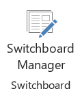
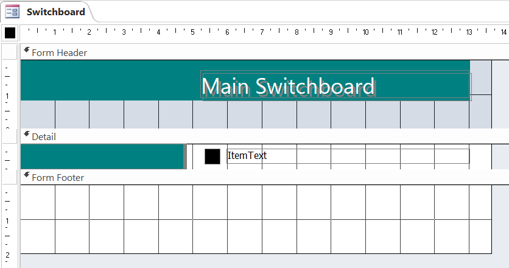
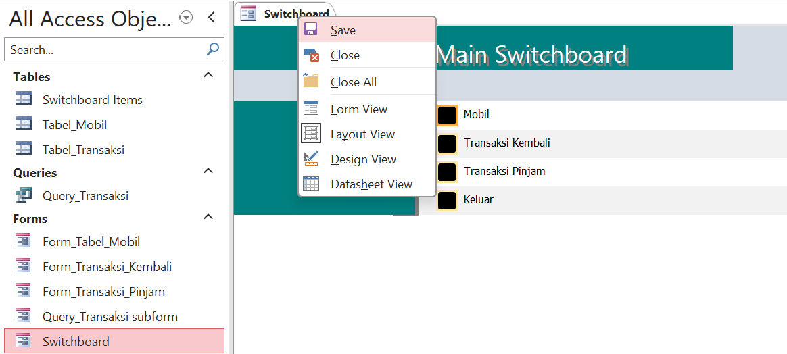
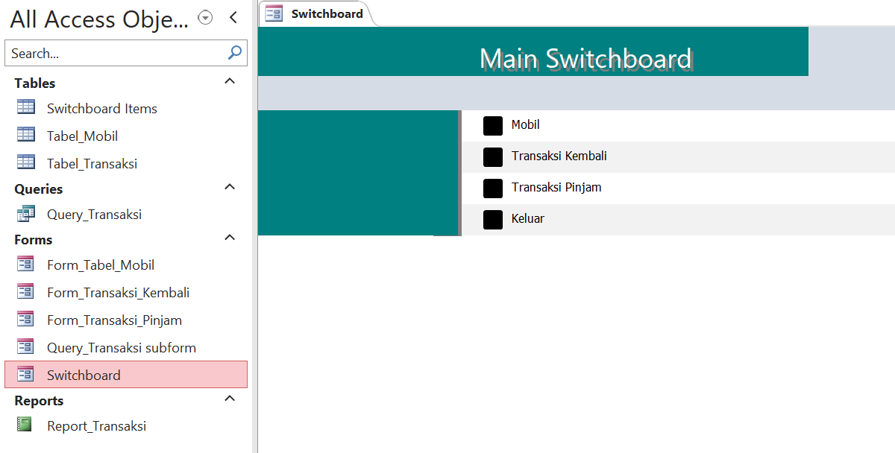

Switchboard adalah sebuah form yang berfungsi sebagai pengendali terhadap sejumlah kegiatan dalam suatu aplikasi. Untuk membuka sebuah form, Kita tidak perlu melakukan sederatan langkah, termasuk mengingat nama form itu sendiri. Dengan bantuan switchboard, Kita cukup mengklik sebuah tombol untuk membuka sebuah formulir.
Untuk membuat report, klik tab Create di ribbon. Pilih More Forms dan pilih Switchboard (jika tersedia) atau buat form baru untuk berfungsi sebagai switchboard.
Atur layout dan desain sesuai kebutuhan.
Simpan form sebagai Switchboard dan atur sebagai tampilan awal jika diinginkan.
Contoh Tampilan Switchboard
